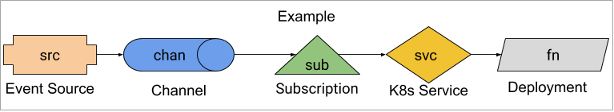

Debugging Knative Eventing¶
This is an evolving document on how to debug a non-working Knative Eventing setup.
Audience¶
This document is intended for people that are familiar with the object model of Knative Eventing. You don't need to be an expert, but do need to know roughly how things fit together.
Prerequisites¶
Example¶
This guide uses an example consisting of an event source that sends events to a function.

See example.yaml for the entire YAML. For any commands in this guide to work, you must apply example.yaml:
kubectl apply --filename example.yaml
Triggering Events¶
Knative events will occur whenever a Kubernetes
Event
occurs in the knative-debug namespace. We can cause this to occur with the
following commands:
kubectl --namespace knative-debug run to-be-deleted --image=image-that-doesnt-exist --restart=Never
# 5 seconds is arbitrary. We want K8s to notice that the Pod needs to be scheduled and generate at least one event.
sleep 5
kubectl --namespace knative-debug delete pod to-be-deleted
Then we can see the Kubernetes Events (note that these are not Knative
events!):
kubectl --namespace knative-debug get events
This should produce output along the lines of:
LAST SEEN FIRST SEEN COUNT NAME KIND SUBOBJECT TYPE REASON SOURCE MESSAGE
20s 20s 1 to-be-deleted.157aadb9f376fc4e Pod Normal Scheduled default-scheduler Successfully assigned knative-debug/to-be-deleted to gke-kn24-default-pool-c12ac83b-pjf2
Where are my events?¶
You've applied example.yaml and you are inspecting fn's logs:
kubectl --namespace knative-debug logs -l app=fn -c user-container
But you don't see any events arrive. Where is the problem?
Check created resources¶
The first thing to check are all the created resources, do their statuses
contain ready true?
We will attempt to determine why from the most basic pieces out:
fn- TheDeploymenthas no dependencies inside Knative.svc- TheServicehas no dependencies inside Knative.chan- TheChanneldepends on its backingchannel implementationand somewhat depends onsub.src- TheSourcedepends onchan.sub- TheSubscriptiondepends on bothchanandsvc.
fn¶
kubectl --namespace knative-debug get deployment fn -o jsonpath='{.status.availableReplicas}'
We want to see 1. If you don't, then you need to debug the Deployment. Is
there anything obviously wrong mentioned in the status?
kubectl --namespace knative-debug get deployment fn --output yaml
If it is not obvious what is wrong, then you need to debug the Deployment,
which is out of scope of this document.
Verify that the Pod is Ready:
kubectl --namespace knative-debug get pod -l app=fn -o jsonpath='{.items[*].status.conditions[?(@.type == "Ready")].status}'
This should return True. If it doesn't, then try to debug the Deployment
using the
Kubernetes Application Debugging
guide.
svc¶
kubectl --namespace knative-debug get service svc
We just want to ensure this exists and has the correct name. If it doesn't exist, then you probably need to re-apply example.yaml.
Verify it points at the expected pod.
svcLabels=$(kubectl --namespace knative-debug get service svc -o go-template='{{range $k, $v := .spec.selector}}{{ $k }}={{ $v }},{{ end }}' | sed 's/.$//' )
kubectl --namespace knative-debug get pods -l $svcLabels
This should return a single Pod, which if you inspect is the one generated by
fn.
chan¶
chan uses the
in-memory-channel.
This is a very basic channel and has few
failure modes that will be exhibited in chan's status.
kubectl --namespace knative-debug get channel.messaging.knative.dev chan -o jsonpath='{.status.conditions[?(@.type == "Ready")].status}'
This should return True. If it doesn't, get the full resource:
kubectl --namespace knative-debug get channel.messaging.knative.dev chan --output yaml
If status is completely missing, it implies that something is wrong with the
in-memory-channel controller. See Channel Controller.
Next verify that chan is addressable:
kubectl --namespace knative-debug get channel.messaging.knative.dev chan -o jsonpath='{.status.address.hostname}'
This should return a URI, likely ending in '.cluster.local'. If it doesn't, then it implies that something went wrong during reconciliation. See Channel Controller.
We will verify that the two resources that the chan creates exist and are
Ready.
Service¶
chan creates a K8s Service.
kubectl --namespace knative-debug get service -l messaging.knative.dev/role=in-memory-channel
It's spec is completely unimportant, as Istio will ignore it. It just needs to
exist so that src can send events to it. If it doesn't exist, it implies that
something went wrong during chan reconciliation. See
Channel Controller.
src¶
src is a ApiServerSource.
First we will verify that src is writing to chan.
kubectl --namespace knative-debug get apiserversource src -o jsonpath='{.spec.sink}'
Which should return
map[apiVersion:messaging.knative.dev/v1 kind:Channel name:chan]. If it
doesn't, then src was setup incorrectly and its spec needs to be fixed.
Fixing should be as simple as updating its spec to have the correct sink
(see example.yaml).
Now that we know src is sending to chan, let's verify that it is Ready.
kubectl --namespace knative-debug get apiserversource src -o jsonpath='{.status.conditions[?(.type == "Ready")].status}'
sub¶
sub is a Subscription from chan to fn.
Verify that sub is Ready:
kubectl --namespace knative-debug get subscription sub -o jsonpath='{.status.conditions[?(.type == "Ready")].status}'
This should return True. If it doesn't then, look at all the status entries.
kubectl --namespace knative-debug get subscription sub --output yaml
Controllers¶
Each of the resources has a Controller that is watching it. As of today, they tend to do a poor job of writing failure status messages and events, so we need to look at the Controller's logs.
Note
The Kubernetes Deployment Controller, which controls fn, is out of scope for this document.
Service Controller¶
The Kubernetes Service Controller, controlling svc, is out of scope for this
document.
Channel Controller¶
There is not a single Channel Controller. Instead, there is one
Controller for each Channel CRD. chan uses the
InMemoryChannel Channel CRD, whose Controller is:
kubectl --namespace knative-eventing get pod -l messaging.knative.dev/channel=in-memory-channel,messaging.knative.dev/role=controller --output yaml
See its logs with:
kubectl --namespace knative-eventing logs -l messaging.knative.dev/channel=in-memory-channel,messaging.knative.dev/role=controller
Pay particular attention to any lines that have a logging level of warning or
error.
Source Controller¶
Each Source will have its own Controller. src is a ApiServerSource, so
its Controller is:
kubectl --namespace knative-eventing get pod -l app=sources-controller
This is actually a single binary that runs multiple Source Controllers, importantly including ApiServerSource Controller.
ApiServerSource Controller¶
The ApiServerSource Controller is run in the same binary as some other Source
Controllers from Eventing. It is:
kubectl --namespace knative-debug get pod -l eventing.knative.dev/sourceName=src,eventing.knative.dev/source=apiserver-source-controller
View its logs with:
kubectl --namespace knative-debug logs -l eventing.knative.dev/sourceName=src,eventing.knative.dev/source=apiserver-source-controller
Pay particular attention to any lines that have a logging level of warning or
error.
Subscription Controller¶
The Subscription Controller controls sub. It attempts to resolve the
addresses that a Channel should send events to, and once resolved, inject
those into the Channel's spec.subscribable.
kubectl --namespace knative-eventing get pod -l app=eventing-controller
View its logs with:
kubectl --namespace knative-eventing logs -l app=eventing-controller
Pay particular attention to any lines that have a logging level of warning or
error.
Data Plane¶
The entire Control Plane looks healthy, but we're still not getting any events. Now we need to investigate the data plane.
The Knative event takes the following path:
-
Event is generated by
src. -
In this case, it is caused by having a Kubernetes
Eventtrigger it, but as far as Knative is concerned, theSourceis generating the event denovo (from nothing). -
srcis POSTing the event tochan's address,http://chan-kn-channel.knative-debug.svc.cluster.local. -
The Channel Dispatcher receives the request and introspects the Host header to determine which
Channelit corresponds to. It sees that it corresponds toknative-debug/chanso forwards the request to the subscribers defined insub, in particularsvc, which is backed byfn. -
fnreceives the request and logs it.
We will investigate components in the order in which events should travel.
Channel Dispatcher¶
The Channel Dispatcher is the component that receives POSTs pushing events into
Channels and then POSTs to subscribers of those Channels when an event is
received. For the in-memory-channel used in this example, there is a single
binary that handles both the receiving and dispatching sides for all
in-memory-channel Channels.
First we will inspect the Dispatcher's logs to see if it is anything obvious:
kubectl --namespace knative-eventing logs -l messaging.knative.dev/channel=in-memory-channel,messaging.knative.dev/role=dispatcher -c dispatcher
Ideally we will see lines like:
{"level":"info","ts":"2019-08-16T13:50:55.424Z","logger":"inmemorychannel-dispatcher.in-memory-channel-dispatcher","caller":"provisioners/message_receiver.go:147","msg":"Request mapped to channel: knative-debug/chan-kn-channel","knative.dev/controller":"in-memory-channel-dispatcher"}
{"level":"info","ts":"2019-08-16T13:50:55.425Z","logger":"inmemorychannel-dispatcher.in-memory-channel-dispatcher","caller":"provisioners/message_dispatcher.go:112","msg":"Dispatching message to http://svc.knative-debug.svc.cluster.local/","knative.dev/controller":"in-memory-channel-dispatcher"}
{"level":"info","ts":"2019-08-16T13:50:55.981Z","logger":"inmemorychannel-dispatcher.in-memory-channel-dispatcher","caller":"provisioners/message_receiver.go:140","msg":"Received request for chan-kn-channel.knative-debug.svc.cluster.local","knative.dev/controller":"in-memory-channel-dispatcher"}
Which shows that the request is being received and then sent to svc, which is
returning a 2XX response code (likely 200, 202, or 204).
However if we see something like:
{"level":"info","ts":"2019-08-16T16:10:16.859Z","logger":"inmemorychannel-dispatcher.in-memory-channel-dispatcher","caller":"provisioners/message_receiver.go:140","msg":"Received request for chan-kn-channel.knative-debug.svc.cluster.local","knative.dev/controller":"in-memory-channel-dispatcher"}
{"level":"info","ts":"2019-08-16T16:10:16.859Z","logger":"inmemorychannel-dispatcher.in-memory-channel-dispatcher","caller":"provisioners/message_receiver.go:147","msg":"Request mapped to channel: knative-debug/chan-kn-channel","knative.dev/controller":"in-memory-channel-dispatcher"}
{"level":"info","ts":"2019-08-16T16:10:16.859Z","logger":"inmemorychannel-dispatcher.in-memory-channel-dispatcher","caller":"provisioners/message_dispatcher.go:112","msg":"Dispatching message to http://svc.knative-debug.svc.cluster.local/","knative.dev/controller":"in-memory-channel-dispatcher"}
{"level":"error","ts":"2019-08-16T16:10:38.169Z","logger":"inmemorychannel-dispatcher.in-memory-channel-dispatcher","caller":"fanout/fanout_handler.go:121","msg":"Fanout had an error","knative.dev/controller":"in-memory-channel-dispatcher","error":"Unable to complete request Post http://svc.knative-debug.svc.cluster.local/: dial tcp 10.4.44.156:80: i/o timeout","stacktrace":"knative.dev/eventing/pkg/provisioners/fanout.(*Handler).dispatch\n\t/Users/xxxxxx/go/src/knative.dev/eventing/pkg/provisioners/fanout/fanout_handler.go:121\nknative.dev/eventing/pkg/provisioners/fanout.createReceiverFunction.func1.1\n\t/Users/i512777/go/src/knative.dev/eventing/pkg/provisioners/fanout/fanout_handler.go:95"}
Then we know there was a problem posting to
http://svc.knative-debug.svc.cluster.local/.